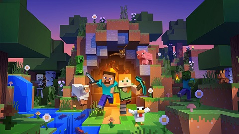
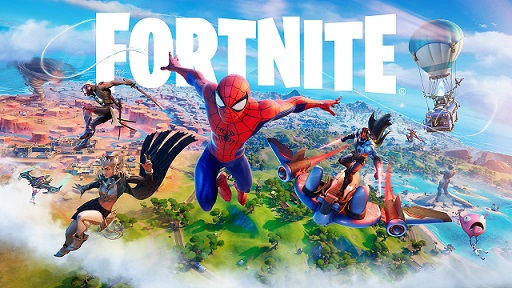
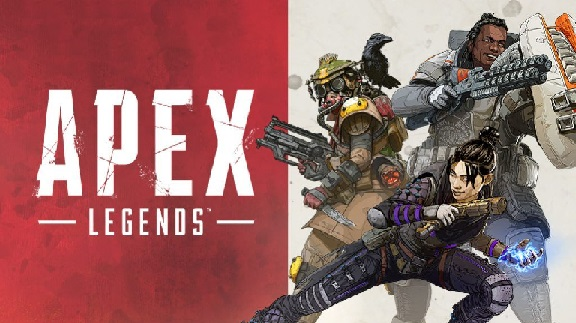
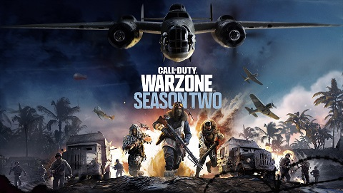

Variedad de Videojuegos
1.- Minecraft

Minecraft es un videojuego de construcción de tipo «mundo abierto» o sandbox creado originalmente por el sueco Markus Persson (conocido comúnmente como Notch),18 y posteriormente desarrollado por Mojang Studios (actualmente parte de Microsoft).19 Fue lanzado el 17 de mayo de 2009, y después de numerosos cambios, su primera versión estable 1.0 fue publicada el 18 de noviembre de 2011.
Markus Persson, el creador de Minecraft.
Un mes antes del lanzamiento de su versión completa se estrenó una versión para dispositivos móviles llamada Minecraft: Pocket Edition en Android,20 y el 17 de noviembre del mismo año fue lanzada la misma versión para iOS.21 El 9 de mayo de 2012 fue lanzada la versión del juego para Xbox 360 y PS3. Todas las versiones de Minecraft reciben actualizaciones constantes desde su lanzamiento. En octubre de 2014, Minecraft lanzó su edición para PlayStation Vita,22 desarrollada por Mojang y 4J Studios. Esta versión presenta las mismas actualizaciones y similares características que las otras versiones de consola; además, cuenta con el sistema de venta cruzada, es decir que al comprar la versión de PlayStation 3 se obtiene también la de PlayStation Vita. A septiembre de 2014 se habían vendido más de 54 millones de copias.23
El 15 de septiembre de 2014, fue adquirido por la empresa Microsoft por un valor de 2500 millones de dólares estadounidenses. Este suceso provocó el alejamiento de Markus Persson de la compañía.23 En noviembre de 2016, Microsoft anunció el lanzamiento de la versión completa de Minecraft: Education Edition.
2.-Fornite

Fortnite es un videojuego del año 2017 desarrollado por la empresa Epic Games, lanzado como diferentes paquetes de software que presentan diferentes modos de juego, pero que comparten el mismo motor de juego y mecánicas. Fue anunciado en los Spike Video Game Awards en 2011.
Los modos de juego publicados en 2017 incluyen Fortnite Battle Royale, un juego gratuito donde hasta cien jugadores luchan en una isla, en espacios cada vez más pequeños debido a la tormenta, para ser la última persona o equipo en pie, y Fortnite: Salvar el mundo, un juego cooperativo de hasta cuatro jugadores que consiste en luchar contra carcasas, criaturas parecidas a zombis, utilizando objetos, mejoras y fortificaciones.
Ambos modos de juego se lanzaron en 2017 como títulos de acceso anticipado. Salvar el Mundo está disponible solo para Windows, macOS, PlayStation 4 y Xbox One, mientras que Battle Royale ha sido publicado también para Nintendo Switch, dispositivos iOS y Android, así como en PlayStation 5 y Xbox Series X|S. En agosto de 2020, el juego fue retirado de la tiendas App Store y Play Store por infringir sus normas, aunque sigue disponible en la tienda Epic Games Store así como en la Galaxy Store.
3.-Apex Legends

Apex Legends es un videojuego gratuito perteneciente al género battle royale desarrollado por Respawn Entertainment y publicado por Electronic Arts.
Fue lanzado para Microsoft Windows, PlayStation 4 y Xbox One el 4 de febrero de 2019. En julio de 2020 se anunció que el título llegaría a Steam a finales de 2020, junto al juego cruzado entre las plataformas. El 9 de marzo de 2021, el juego llegó a Nintendo Switch. Una campaña publicitaria centrada en youtubers y jugadores profesionales, consiguió atraer 1 millón de jugadores únicos en ocho horas, 2,5 millones en el primer día y 50 millones en tres días.
Mientras Respawn había estado trabajando en los esfuerzos para lograr una segunda secuela en la serie Titanfall, el éxito de las modalidades battle royale en los videojuegos los llevó a volver a trabajar los elementos de Titanfall en un género de Battle Royale, manteniendo su propio sabor en ese género.
4.- Call Of Duty Warzone

Call of Duty: Warzone es un videojuego de disparos en primera persona, perteneciente al género Battle royale gratuito, lanzado el 10 de marzo de 2020 para PlayStation 4, PlayStation 5, Xbox One, Xbox Series X|S y Microsoft Windows. El modo juego está disponible en estas plataformas y es parte del videojuego de 2019, Call of Duty: Modern Warfare, pero no requiere su compra y se presentó durante la temporada 2 del contenido de Modern Warfare. Con la integración con Call of Duty: Vanguard pasó a denominarse Call of Duty: Warzone Pacific.
Call of Duty: Warzone fue desarrollado por Infinity Ward y Raven Software y publicado por Activision. Warzone permite el combate multijugador en línea entre 150 jugadores, aunque algunos modos de juego por tiempo limitado admiten 200 jugadores. El juego presenta tanto un juego multiplataforma como una progresión multiplataforma entre tres juegos.
El juego presenta tres modos principales: Saqueo (botín), resurgimiento y Battle royale. Warzone introduce un nuevo sistema de moneda en el juego que se puede utilizar en "Estaciones de compra" en Verdansk, isla de renacimiento y sus alrededores. Las entregas de "armamento" son un ejemplo de dónde se puede intercambiar efectivo por acceso limitado a las clases de armas personalizadas de los jugadores (antes las clases se compartían con las del modo multijugador de Modern Warfare, pero en el parche v1.29 de la temporada 6 las separaron, y ahora son diferentes los de Warzone con los de Modern Warfare y Call of Duty: Black Ops Cold War por la comodidad de los jugadores). Los jugadores también pueden usar dinero para comprar artículos como "Rachas de bajas" y máscaras Anti gas. Se puede encontrar dinero en efectivo saqueando edificios y matando a jugadores que tienen dinero en efectivo. En el lanzamiento, Warzone solo ofreció el modo Tríos, una capacidad de escuadrón de tres jugadores. Sin embargo, en las actualizaciones de contenido gratuitas posteriores al lanzamiento, se han agregado al juego Solos (individual), Dúos y Escuadrones.
El juego recibió críticas generalmente positivas de los críticos, y los mapas recibieron elogios específicos. En mayo de 2020, Activision anunció que Warzone había superado los 60 millones de descargas en los dos primeros meses. A diciembre de 2020, el juego tenía más de 85 millones de jugadores en todo el mundo. Actualmente (abril de 2021) el juego supera ya los 100 millones de jugadores.